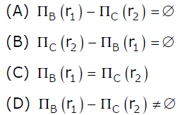

Following Questions have been asked in GATE 2012 exam.
1) Which of the following statements are TRUE about an SQL query?
P: An SQL query can contain a HAVING clause even if it does not a GROUP BY clause
Q: An SQL query can contain a HAVING clause only if it has a GROUP BY clause
R: All attributes used in the GROUP BY clause must appear in the SELECT clause
S: Not all attributes used in the GROUP BY clause need to apper in the SELECT clause
(A) P and R
(B) P and S
(C) Q and R
(D) Q and S
Answer (C)
According to standard SQL answer should be option (C) which is answer key given by GATE authority.
If we talk about different SQL implementations like MySQL, then option (B) is also right. But in question they seem to be talking about standard SQL not about implementation. For example below is a
P is correct in most of the implementations. HAVING clause can also be used with aggregate function. If we use a HAVING clause without a GROUP BY clause, the HAVING condition applies to all rows that satisfy the search condition. In other words, all rows that satisfy the search condition make up a single group. See this for more details.
S is correct . To verify S, try following queries in SQL.
CREATE TABLE temp
(
id INT,
name VARCHAR(100)
);
INSERT INTO temp VALUES (1, "abc");
INSERT INTO temp VALUES (2, "abc");
INSERT INTO temp VALUES (3, "bcd");
INSERT INTO temp VALUES (4, "cde");
SELECT Count(*)
FROM temp
GROUP BY name;
Output:
count(*) -------- 2 1 1
Alternative way –
Statement (P) “An SQL query can contain a HAVING clause even if it does not have a GROUP BY clause” is correct because Having caluse is applied after the aggregation phase and must be used if you want to filter aggregate results and Having doesn’t require Group By clause. A HAVING clause without a GROUP BY clause is valid and (arguably) useful syntax in Standard SQL. Consider this example, which is valid Standard SQL:
SELECT 'T' AS result FROM Book HAVING MIN(NumberOfPages) < MAX(NumberOfPages);
Statement (S) "Not all attributes used in the GROUP BY clause need to appear in the SELECT clause" is correct but if we use Group By clause must, there are limitations on what we can put into the Select clause.
2) Given the basic ER and relational models, which of the following is INCORRECT?
(A) An attributes of an entity can have more that one value
(B) An attribute of an entity can be composite
(C) In a row of a relational table, an attribute can have more than one value
(D) In a row of a relational table, an attribute can have exactly one value or a NULL value
Answer (C)
The term 'entity' belongs to ER model and the term 'relational table' belongs to relational model.
A and B both are true. ER model supports both multivalued and composite attributes See this for more details.
(C) is false and (D) is true. In Relation model, an entry in relational table can can have exactly one value or a NULL.
3) Suppose (A, B) and (C,D) are two relation schemas. Let r1 and r2 be the corresponding relation instances. B is a foreign key that refers to C in r2. If data in r1 and r2 satisfy referential integrity constraints, which of the following is ALWAYS TRUE?

{kind=link}
Answer (A)
B is a foreign key in r1 that refers to C in r2. r1 and r2 satisfy referential integrity constraints. So every value that exists in column B of r1 must also exist in column C of r2.
4) Which of the following is TRUE?
(A) Every relation in 2NF is also in BCNF
(B) A relation R is in 3NF if every non-prime attribute of R is fully functionally dependent on every key of R
(C) Every relation in BCNF is also in 3NF
(D) No relation can be in both BCNF and 3NF
Answer (C)
BCNF is a stronger version 3NF. So every relation in BCNF will also be in 3NF.
Please see GATE Corner for all previous year paper/solutions/explanations, syllabus, important dates, notes, etc.